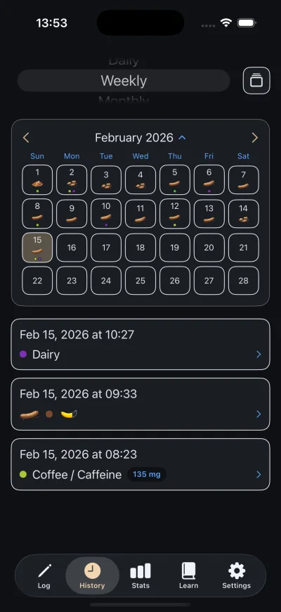

How do I keep a bowel movement diary?
See a filled-in example with two visits on one day. Learn what to record, how to handle a missed entry, and how to bring a copy to an appointment.
Bowel diary for iPhone & iPad
Poopy keeps a calendar of your bathroom trips. Log a visit in a few taps, add the details you care about, and look back whenever you like.
Download on the App StoreFree to use · Optional Theme Pack
See a filled-in example with two visits on one day. Learn what to record, how to handle a missed entry, and how to bring a copy to an appointment.
Compare seven illustrated stool shapes, see the difference between types 3 and 4 or 5 and 6, and learn how to describe a mixed bowel movement.
Learn what an adult bowel-habit study found about frequency and how to compare your own daily counts without mistaking missing days for zero.
Download a one-page worksheet in A4 or US Letter. There’s room for twelve visits, including several on the same day.

Your history
Tap a day to see each visit. Use the Bristol stool chart to record shape, then add a note or a tag if there’s something you want to remember.
Want to bring a copy to an appointment? Export your history as a PDF.
Prefer paper? Print a free bowel diaryThe Theme Pack
One optional purchase unlocks the full collection of home screen illustrations in Poopy.